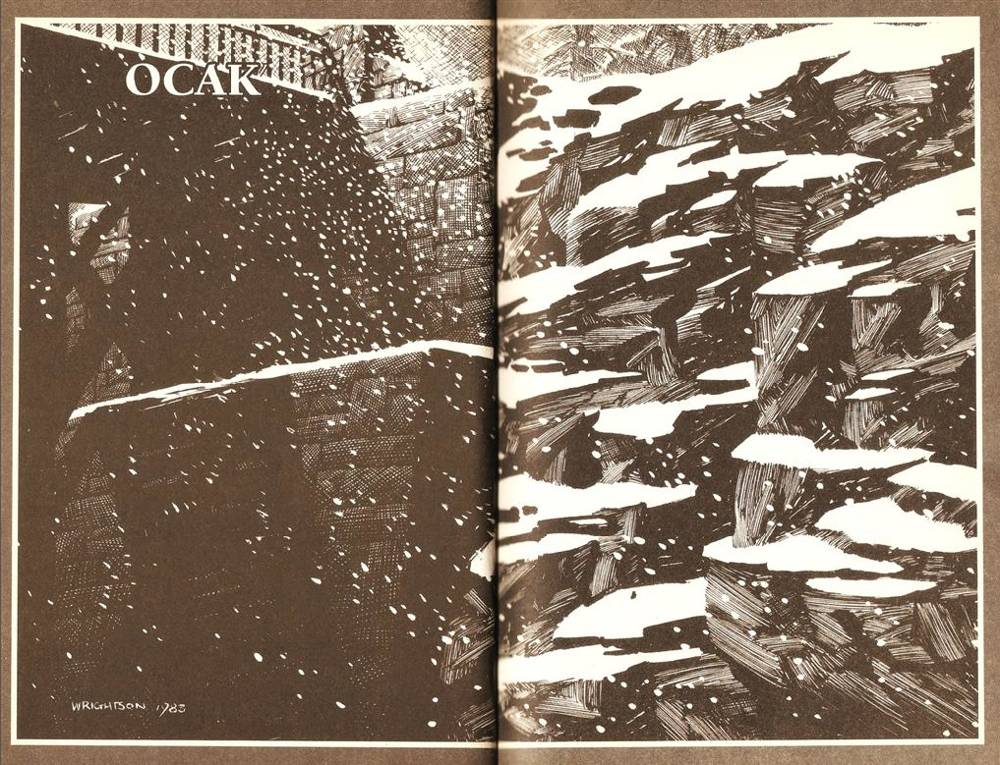
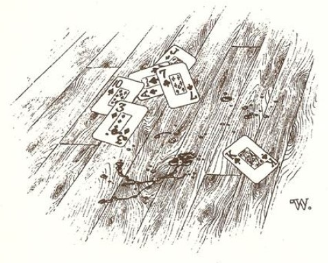
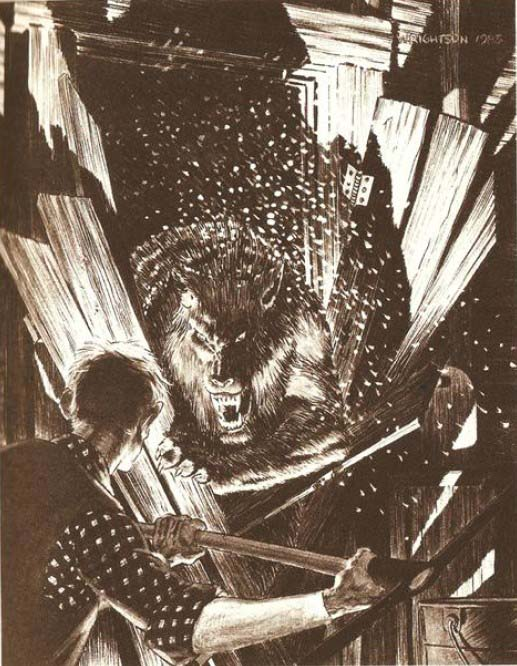

İYİCE YUKARILARDA BİR yerde, yusyuvarlak ve dolgun bir ay aşağıya doğru ışıldıyordu - ama burada, Tarker's Mills'de, şiddetli bir Ocak tipisi gökyüzünü kara boğmuştu. Rüzgâr, ıssızlaşmış Merkez Cadde'sinin üzerine bütün kuvvetiyle çarpmaktaydı; kasabanın turuncu renkli kar süpürücüleri çoktan pes etmişlerdi.
GS&WM Demiryolu'nun bayrakçısı Arnie Westrum, fırtınaya, kasabanın dokuz mil dışındaki küçük, derme çatma, malzeme kulübesinde yakalanmıştı; rüzgârın sürüklediği kar yığınları, benzinli küçük demiryolu arabasının önünü kapatmıştı ve bir deste yağlı kartla "Sona Kalan Adam" falı bakarak fırtınanın dinmesini bekliyordu. Dışarıda rüzgâr keskin bir çığlık attı. Westrum başını huzursuzca kaldırmasının ardından yeniden oyununa döndü. Sonuçta bu sadece rüzgârdı...
Ama rüzgâr kapıları tırmalamaz ... ve içeri girmek için sızlanmazdı ki.
Uzun boylu, sırık gibi bir adam olan Arnie, yün ceketi, iş tulumu ve ağzının bir köşesinden sarkan Camel'ıyla ayağa kalktı. Façalı New England yüzü, duvarda asılı duran gaz lambasının yumuşak, turuncu ışığıyla aydınlanıyordu.
Bir tırmalama sesi daha. Binlerinin köpeği kaybolmuş ve içeri girmek istiyor, diye düşünüyordu. Hepsi bu işte . . . ama yine de duraksadı. Onu soğukta böylece bırakmak insanlığa sığmaz, diye düşünüyor (aslında içerisi daha sıcak falan değildi, pilli ısıtıcıya rağmen adam nefesinin oluşturduğu soğuk bulutu görebiliyordu) - ama yine de tereddüt ediyordu. Korkunun soğuk parmağı kalbinin tam altını yoklamaktaydı. Tarker's Mills için çok kötü bir mevsim geçmekteydi; şeytani kehanetler bölgenin üzerine çökmüştü. Damarlarında babasının güçlü Gal kanını taşıyan Arnie'nin sezdiği şeyler hiç hoşuna gitmiyordu.
Ziyaretçisi hakkında ne yapabileceğine dair bir karara varamadan kısık sızlanma sesi hırlamaya dönüşmüştü. Kapıya sanki inanılmaz ağırlıkta bir şey çarpıyormuşçasına bir gümbürtü koptu . .. geri çekiliyor ... ardından tekrar çarpıyordu. Kapının çerçeveleri sarsılıyor ve kar parçacıkları dalgalanarak kapının üzerinden içeri giriyordu.
Arnie Westrum, kapıyı destekleyecek bir şeyler bulmak için etrafına bakındı; ama az önce üzerinde oturduğu dayanıksız sandalyeye uzanmaktan fazlasını yapamayacaktı ve hırlayan şey inanılmaz bir güçle tekrar çarptığında kapıyı boydan boya çatlatıyordu.
Yaratık bir an bekledi, dikey bir çizgi üstünde yay gibi kıvrılmış ve kapının girişine yerleşmişti, ayaklarıyla yeri tekmeleyerek saldırmaya hazırlanıyordu, hırıldarken burnu geriye kıvrılmıştı, parıldayan san gözleriyle Arnie'nin şu ana dek gördüğü en büyük kurttu...
Ve hırlayışları korkunç bir şekilde insan sözcüklerine benziyordu.
Yarılıp parçalanan kapı çatırdayarak dağıldı. O şey bir saniye içinde içerde olacaktı.
Yığılmış aletlerin karşısındaki köşede, bir kazma duvara dayalı duruyordu. Arnie'nin atılıp kazmayı kaptığı anda, san gözleri köşeye sıkışmış adama doğru parıldayan kurt, içeriye dalıp hafifçe yere doğru sindi. Kulakları geriye yatmıştı, tüylü üçgenler gibiydi. Dili dışarı sarkıyordu. Kar, yaratığın arkasından, boydan boya parçalanmış kapıdan, içeriye doluyordu.
Bir hırıltıyla ileriye doğru atılırken Arnie Westrum kazmayı savurdu.
Bir kere.
Dışarıda, parçalanmış kapıdan sızan lambanın zayıf ışığı karın üzerinde parlıyordu.
Rüzgâr haykırıp uludu.
Çığlıklar başladı.
Tarker's Mills'e insan olmayan bir şey gelmişti; yukarıda, karanlık gökyüzünde ilerleyen dolunay kadar görülmemiş bir şey. O bir Kurtadamdı ve oraya gelişinin ardında, aklında cinayet düşünceleri olan bir psikotiğin gelişi, öldürücü bir kasırganın ya da kanserin gelişi gibi aslında hiçbir sebep yoktu. Şimdi onun zamanıydı ve artık onun yeri burasıydı, fırında pişmiş fasulyeden oluşan kilise yemeklerinin haftalık bir olay olduğu, küçük kız ve oğlan çocuklarının öğretmenlerine hâlâ elma getirmeyi sürdürdüğü, Liseli Yurttaşlar Kulübü tarafından düzenlenen Doğa Gezileri'nin dini bir vazifeymişçesine haftalık gazetede yer aldığı bu küçük Maine kasabası. Gazetede gelecek hafta daha karanlık haberler olacaktı.
Dışarda kar, onun izlerini dolduruyordu ve rüzgârın çığlığı zevkten çıldırmış gibiydi. Bu vicdansız sesin içinde Tanrı ya da Işık'la ilgili hiçbir şey yoktu - tamamen zifiri kış ve karanlık bir buzdan oluşuyordu ...
Kurtadam'ın döngüsü başlamıştı.

